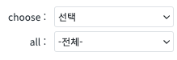
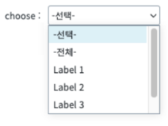
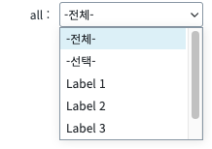
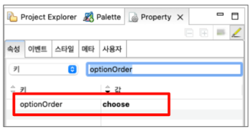

SelectBox의 optionOrder를 적용하는 예제입니다. optionOrder는 전체 항목(all option)과 선택 항목(choose option)을 동시에 사용하는 경우 출력되는 순서를 설정하는 속성입니다. allOption: 전체 항목 표시여부. lable은 "-전체-"로 value는 "all"로 설정 chooseOption: 선택 안내 메시지 표시. chooseOptionLabel 속성이 설정되면 해당 값이 표시되며, 그렇지 않으면 "-선택-"이 표시되고 value는 ""(empty string)으로 설정
SelectBox의 optionOrde 적용하기
그림 1.[브라우저 실행 예제] - 기본 상태

그림 2.[브라우저 실행 예제] - optionOrder : choose

그림 3.[브라우저 실행 예제] - optionOrder : all

[필수] optionOrder = "choose" / "all"
그림 4.웹스퀘어5 SP5 스튜디오의 Property View(속성 창) 예시

[소스 코드 예시]
<xf:select1 ... optionOrder="choose" ...>
<!-- 중략 -->
</xf:select1>optionOrder